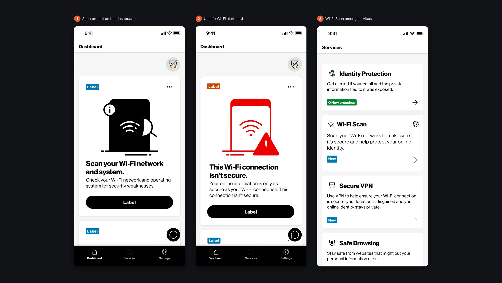
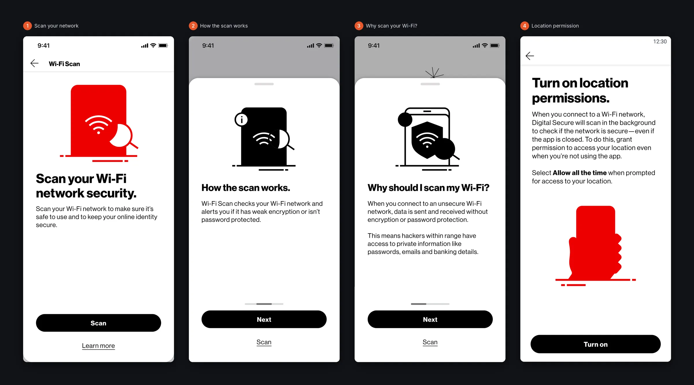
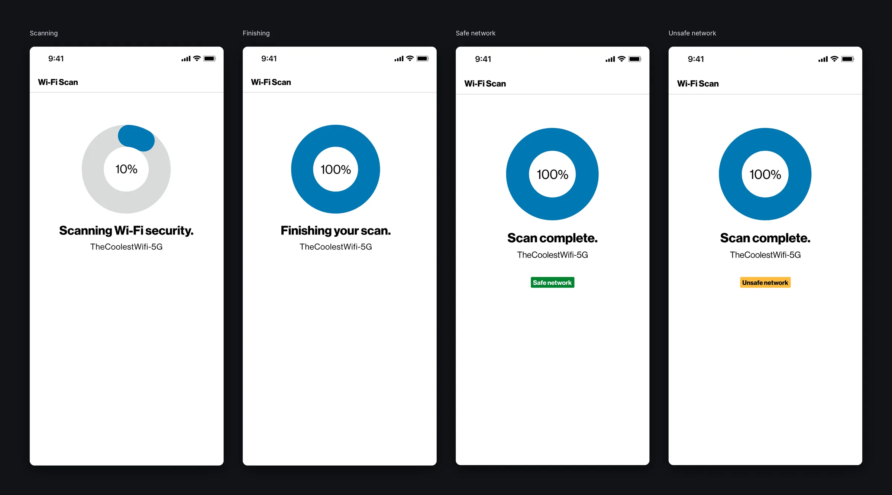
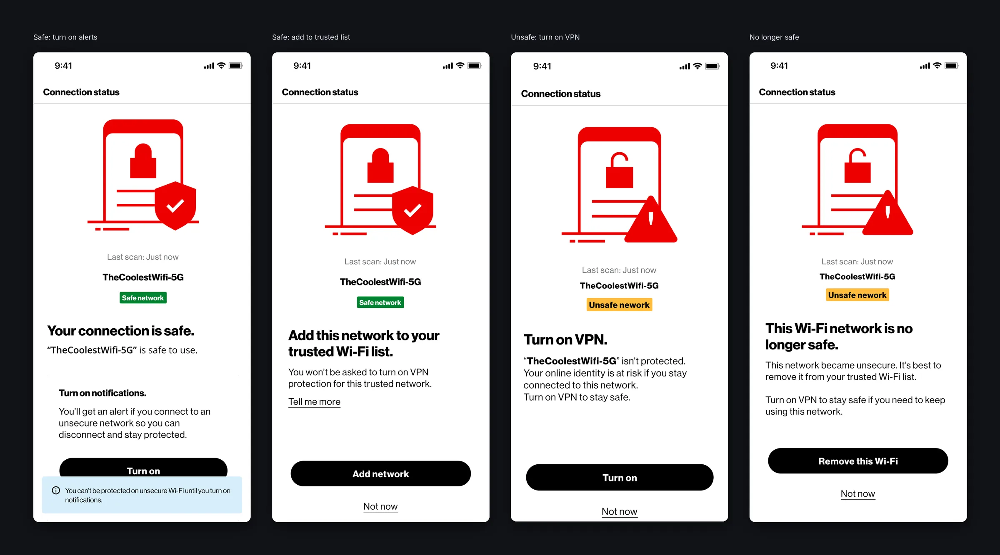
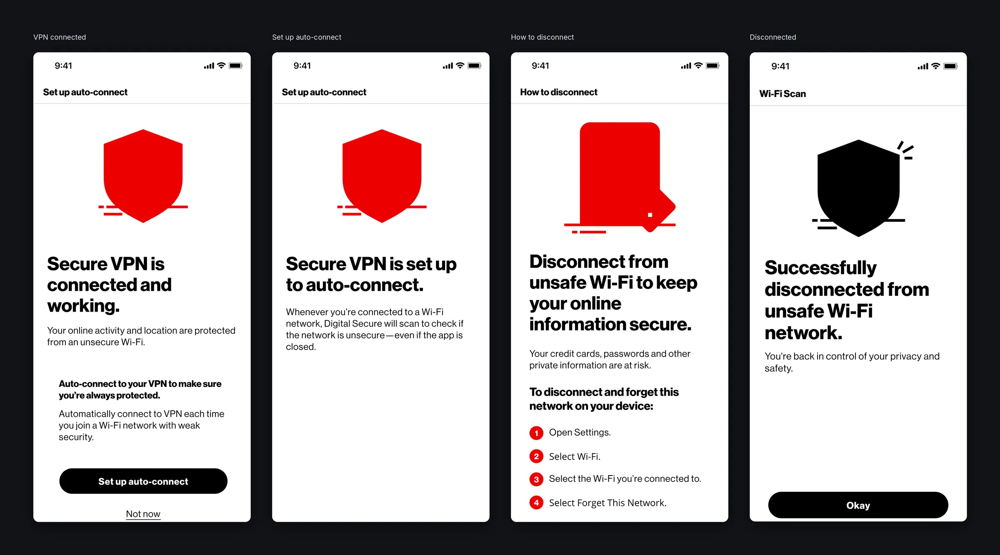
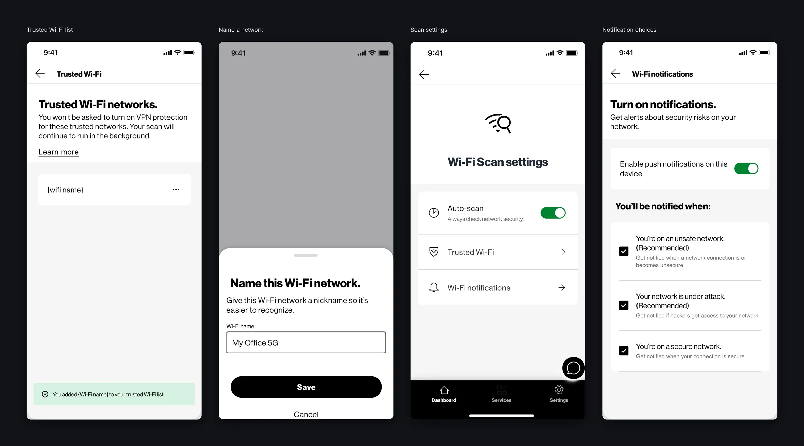
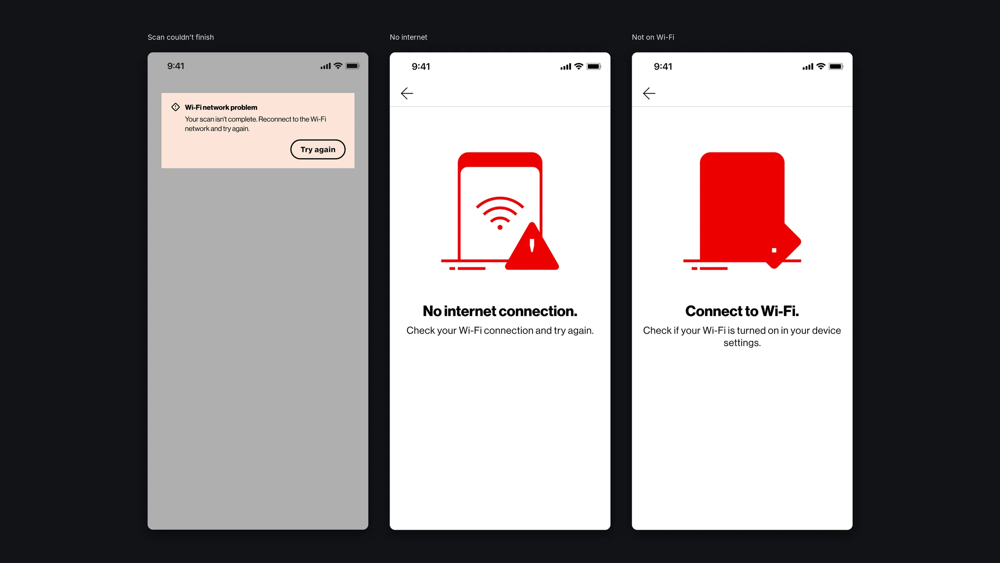

Problem Statement
How might we ensure that the public Wi-Fi internet connection that users connect to is secure and does not compromise their data?
Role & Responsibilities
As a Product Design Consultant with McAfee, I designed the Wi-Fi Scan experience in Verizon Digital Secure end to end: the user journey, wireframes, and the high-fidelity flows for scanning, results, VPN protection and trusted networks.
I worked with McAfee product managers and engineering leads, designed every state from the first education screens to error messages, and built the flows on the Verizon Design System so they matched the rest of the app.
User Journey
Based on the business requirements and the requested features, I created the first draft of the user journey, and presented it to stakeholders. After several rounds of iterations with the stakeholders, the user journey was locked in.

Wireframes
Based on the user journey, I created wireframes (Concepts) to explore interaction patterns for network scanning, status indicators, and trusted network management. I met with the front end engineers to consult with them about the wireframes to ensure the designs were feasible to implement.

Research, Options & Trade-offs
What research revealed
Users didn't understand technical security terms. They wanted a simple safe-or-not answer and what to do next.
Directions explored
- Option A: Detailed technical scan results. Dropped: confusing.
- Option B: A clear status (safe, caution, unsafe) with one recommended action and details on demand. Chosen.
Trade-offs
Scanning was limited by what the mobile OS allows, so the design set expectations about what could and couldn't be checked.
High-Fidelity Designs
The final high-fidelity designs delivered a polished, intuitive interface that simplified complex security concepts for Verizon customers. I ensured consistency with brand standards while prioritizing clear, actionable feedback during the scanning and connection process.

Where the scan lives
Wi-Fi Scan sits inside the Digital Secure dashboard. A card invites people to scan their network, and when the app detects an unsecure connection, the card changes to a clear warning with one button to act on it. Wi-Fi Scan also appears in the Services list next to Identity Protection, Secure VPN, Safe Browsing and Antivirus.

Explaining the scan before asking for access
To scan in the background, the app needs location access all the time, which is a big ask. Before the system prompt, short screens explain how the scan works and why it matters: on an unsecure network, people within range can snoop on passwords, emails and banking details. Only then do we ask for permission, with steps to fix it in Settings if someone declines.

A scan that feels quick and certain
The scan shows its progress with a ring and the network name. The finishing screen holds for a moment so the result never feels abrupt, then shows a clear label: Safe network or Unsafe network.

One clear answer, one next step
Each result answers “am I safe?” and offers one next step. On a safe network, people can turn on alerts or add it to their trusted list. On an unsafe network, the main action is to turn on VPN. If a trusted network becomes unsafe later, the app says so plainly and suggests removing it.

Staying protected
From an unsafe result, Secure VPN connects in a couple of taps, and auto-connect turns it on whenever someone joins a network with weak security. If they would rather leave the network, step-by-step instructions show how to disconnect and forget it, followed by a clear confirmation.

Trusted networks and settings
A trusted Wi-Fi list keeps track of networks people know are safe. They can add up to 100 networks and give each one a nickname, and they won’t be asked to turn on VPN for them while the scan keeps running in the background. Settings let them turn auto-scan on or off and choose which alerts they get: unsafe networks, networks under attack, or safe networks.

When things go wrong
We designed the unhappy paths too: a scan that couldn’t finish, no internet connection, and a phone that isn’t on Wi-Fi. Each one explains what happened in plain words and offers a way forward.
